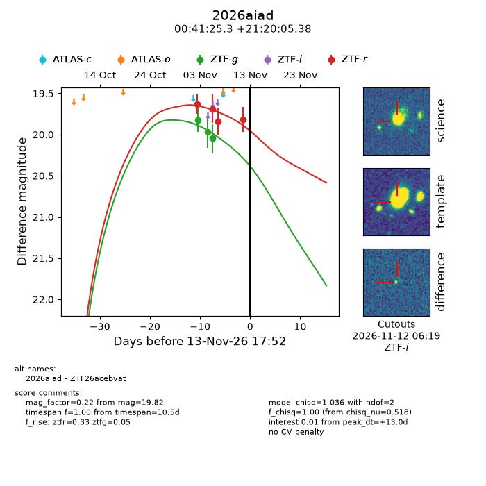
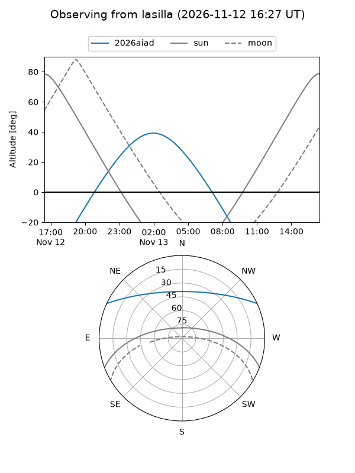
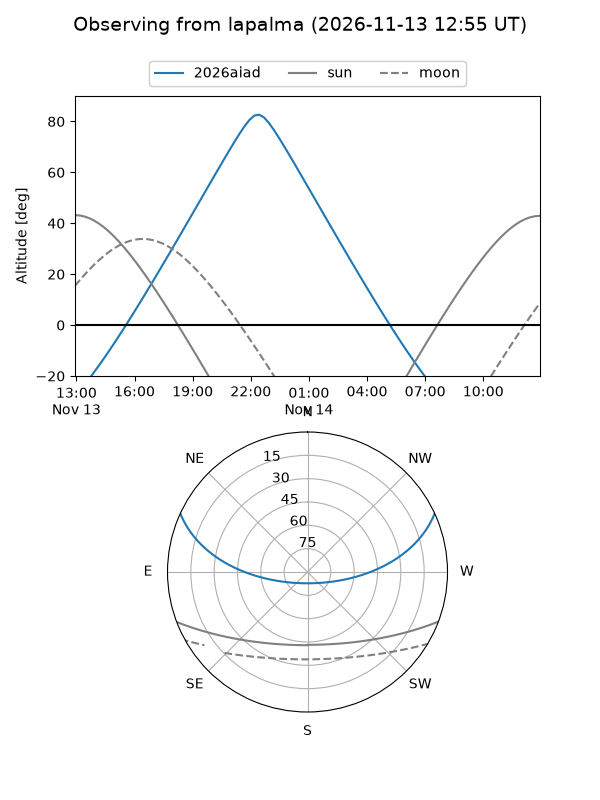
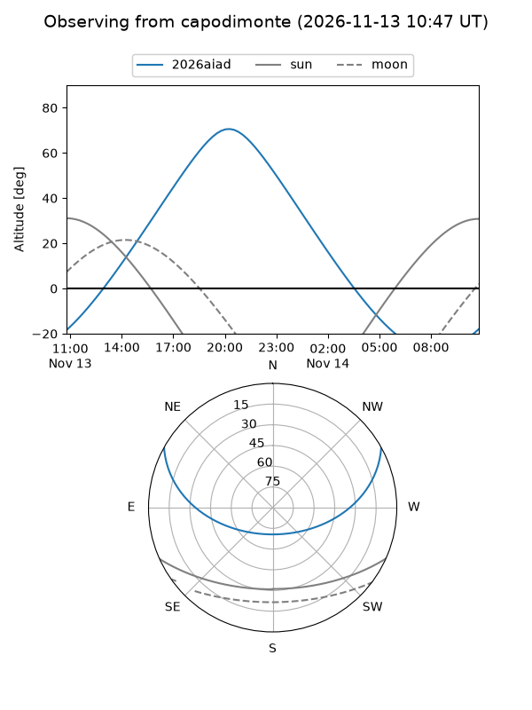
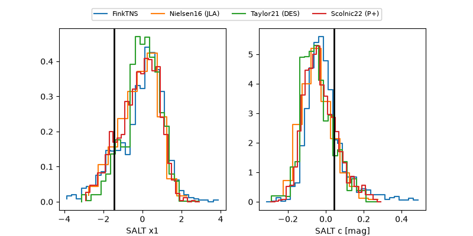

2026aiad
Target 2026aiad at 2026-11-13 17:58
Aliases and brokers:
FINK-ZTF: ztf.fink-portal.org/ZTF26acebvat
Lasair-ZTF: lasair-ztf.lsst.ac.uk/objects/ZTF26acebvat
ALeRCE-ZTF: alerce.online/object/ZTF26acebvat
YSE-PZ: ziggy.ucolick.org/yse/transient_detail/2026aiad
TNS name: wis-tns.org/object/2026aiad
Direct TNS query: direct search
alt names
ZTF26acebvat (ztf,fink_ztf)
2026aiad (tns,yse)
Coordinates:
equatorial (ra, dec) = 10.3552,+21.33483
equatorial (HMS+DMS) = 00:41:25.26,+21:20:05.38
galactic (l, b) = (119.8180,-41.47635)
Flags:
peak dt: +13.0
Photometry:
last ztfg=20.05, ztfr=19.82
3 ztfg, 4 ztfr detections
Lightcurve

Visibility



Additional plots
